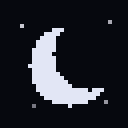
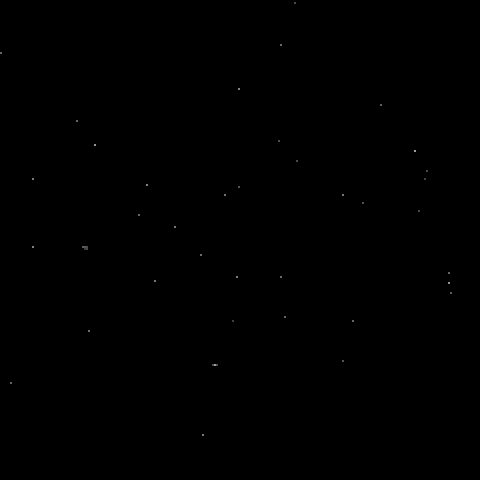
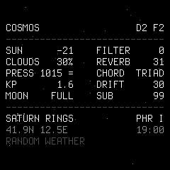
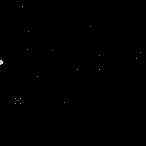
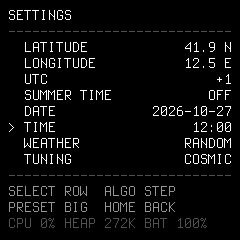
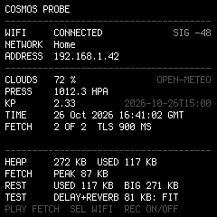
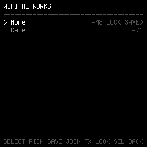
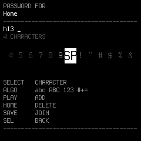

COSMOSA drone synthesizer played by the sky. The sun, the clouds, the air pressure, the geomagnetic activity and the moon shape a drone and the instrument above it, and the screen is the real sky above you.
2026-10-26
Every half hour the FM-1 asks the sky how it is, then lets the sound glide there. The slower a source changes, the deeper it reaches: the pressure decides what instrument COSMOS is, the moon how pure its drone, a geomagnetic storm tears it apart now and then, the clouds and the sun colour it through the day.
29.5 days
The light of the drone. New moon: nearly pure sines. Full: a veil of harmonics, a heavy sub and a singing resonance.
hours to days · drastic
The instrument playing the chords. High: an organ. Fair: strings. Falling: a warm pad. Low, rain and storms: a choir.
hours · storms are rare
The storms. A quiet sun gives a gentle drift. A geomagnetic storm turns on ring and cross-modulation, and the stars on the screen shiver.
hours · medium
The space. A clear sky is dry and near; an overcast one washes the drones in reverb, delay and noise, and hides the stars.
every day · gentle
The light. Its height opens the filter from the dark of night to the brightness of noon, and follows the seasons by itself.
while they are in sight
The structure. A planet in the sky can be chosen: its note and its four chords. And the arpeggiator plays the stars and the planets as a line sweeps across them.
White Terminus text on black, over the stars, the moon and the planets where they are above you now. Touch a control and the readings fade in; leave it and they fade back to the sky.







On a computer with Chrome or Edge and the FM-1 on USB. Installing firmware is at your own risk; the installer puts M-VAVE's own firmware back too. Decline m-bootloader when it is offered: COSMOS does not need it.